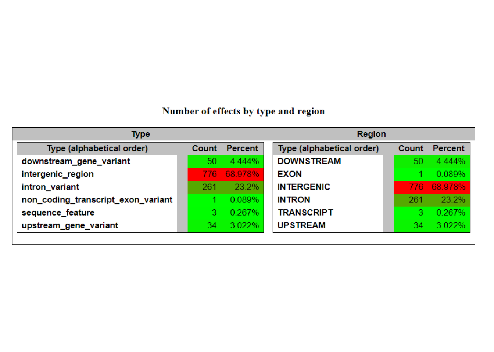

3 Mijn toekomst en GATK tools
3.1 Doel:
Over ~2 jaar wil ik een ervaren professional zijn in het interpreteren van Whole Exome Sequencing (WES) met een specialisatie in het identificeren van genetische oorzaken van zeldzame genetische aandoeningen, met name het KBG-syndroom. Ik wil diepere expertise ontwikkelen in het gebruik van geavanceerde tools zoals GATK om nauwkeurige genetische analyses uit te voeren.
3.2 Huidige Status:
Op dit moment heb ik basiskennis van Whole Exome Sequencing en begrijp ik de algemene principes van genetische analyses. Ik heb ervaring met het interpreteren van genetische data, maar ik mis specifieke kennis van het gebruik van GATK-tools voor geavanceerde analyses.
3.3 Volgende Vaardigheden om te leren:
De volgende vaardigheid die ik moet leren, is het effectief gebruik van GATK-tools voor genetische data-analyse. Dit omvat het begrijpen van de tools, het uitvoeren van variant calling, en het interpreteren van de resultaten voor het identificeren van genetische varianten.
3.4 Leerplan:
3.4.1 Dag 1 : Project Initiatie & Tool Setup
Referentie materiaal lezen en bestuderen: Voordat er wordt begonnen, zal het referentiemateriaal worden gelezen en bestudeerd. Dit omvat documentatie, handleidingen en relevante literatuur over variant calling en bioinformatica-analyse.
Data downloaden: De ruwe sequencingdata die nodig zijn voor de analyse zal worden gedownload gebruik van 1000 genoomes
Nodige programma’s installeren: Om de analyse uit te voeren, zullen verschillende bioinformatica-tools en software worden geïnstalleerd. Dit omvat programma’s zoals GATK, BWA, samtools en eventuele andere benodigde tools.
3.4.2 Dag 2: Data voorbereiden voor analyse
Verwerken van ruwe sequencing data: De ruwe sequencingdata zal worden verwerkt om ze klaar te maken voor variant calling. Dit omvat stappen zoals kwaliteitscontrole, trimmen van adapters en kwaliteitsfiltering.
Voorbereiden van referentiegenoom: Het referentiegenoom zal worden voorbereid voor gebruik in de analyse. Dit omvat het downloaden, indexeren en eventueel annoteren van het referentiegenoom.
3.4.3 Dag 3: Variant Calling Pipeline
Variant calling uitvoeren: Variant calling zal worden uitgevoerd op de verwerkte sequencingdata met behulp van tools zoals GATK. Dit omvat het identificeren van variaties ten opzichte van het referentiegenoom.
Annotatie van Varianten bestuderen: Na het oproepen van varianten zullen de varianten worden geannoteerd en bestudeerd. Dit omvat het identificeren van genetische varianten en het begrijpen van hun mogelijke impact op biologische processen.
3.5 Voorbereiding
Stap 1: Installeren van Benodigde Software De installatie van de benodigde softwarepakketten en tools werd gestart. Een conda-omgeving werd gebruikt om de dependencies te beheren.
# Maak een nieuwe conda omgeving aan en activeer deze
conda create -n variant_calling
conda activate variant_calling
# Installeer Samtools, BWA, FastQC en GATK
conda install -c bioconda samtools bwa fastqc
conda install -c conda-forge openjdk=17Stap 2: Data Downloaden en Voorbereiden Daarna werd de benodigde data gedownload, waaronder het referentiegenoom en de sequencing reads. Deze data werd opgeslagen in gestructureerde mappen.
# Maak benodigde directories aan
mkdir -p ~/variant_calling/{aligned_reads,reads,scripts,results,tools,referentie_genoom}
# Download sequencing reads
wget -P ~/variant_calling/reads ftp://ftp.1000genomes.ebi.ac.uk/vol1/ftp/phase3/data/HG00096/sequence_read/SRR062634_1.filt.fastq.gz
wget -P ~/variant_calling/reads ftp://ftp.1000genomes.ebi.ac.uk/vol1/ftp/phase3/data/HG00096/sequence_read/SRR062634_2.filt.fastq.gz
# GATK downloden en installeren
wget -P ~/variant_calling/tools https://github.com/broadinstitute/gatk/releases/download/4.5.0.0/gatk-4.5.0.0.zip
unzip ~/variant_calling/tools/gatk-4.5.0.0.zip
# Download en prepareer de referentiegenoom
wget -P ~/variant_calling/referentie_genoom/ https://hgdownload.soe.ucsc.edu/goldenPath/hg38/bigZips/hg38.fa.gz
gunzip ~/variant_calling/referentie_genoom/hg38.fa.gz
samtools faidx ~/variant_calling/referentie_genoom/hg38.fa
java -jar ~/variant_calling/tools/gatk-4.5.0.0/gatk-package-4.5.0.0-local.jar CreateSequenceDictionary R=~/variant_calling/referentie_genoom/hg38.fa O=~/variant_calling/referentie_genoom/hg38.dict
# Download know sites files for BQSR from GATK resource bundle
wget -P ~/variant_calling/referentie_genoom/ https://storage.googleapis.com/genomics-public-data/references/hg38/v0/Homo_sapiens_assembly38.dbsnp138.vcf
wget -P ~/variant_calling/referentie_genoom/ https://storage.googleapis.com/genomics-public-data/references/hg38/v0/Homo_sapiens_assembly38.dbsnp138.vcf.idxStap 3: Kwaliteitscontrole en Mapping Na het downloaden van de data werden de sequencing reads gecontroleerd op kwaliteit met FastQC. Vervolgens werden ze gemapt naar het referentiegenoom met behulp van BWA. Dit proces zorgde voor een nauwkeurige uitlijning van de reads op de juiste locaties in het genoom, wat essentieel is voor verdere variant calling en mutatie-identificatie.
# Run FastQC voor kwaliteitscontrole
fastqc ~/variant_calling/reads/SRR062634_1.filt.fastq.gz -o ~/variant_calling/reads/
fastqc ~/variant_calling/reads/SRR062634_2.filt.fastq.gz -o ~/variant_calling/reads/
# Map reads naar referentiegenoom met BWA
bwa index ~/variant_calling/referentie_genoom/hg38.fa
bwa mem -t 4 -R "@RG\tID:SRR062634\tPL:ILLUMINA\tSM:SRR062634" ~/variant_calling/referentie_genoom/hg38.fa ~/variant_calling/reads/SRR062634_1.filt.fastq.gz ~/variant_calling/reads/SRR062634_2.filt.fastq.gz > ~/variant_calling/aligned_reads/SRR062634.paired.samStap 4: Markeren van Duplicaten en Basiskwaliteit Herkalibratie Duplicaten werden gemarkeerd en de basiskwaliteit werd herkalibreerd om de nauwkeurigheid van de variant calling te verbeteren. Deze stap is cruciaal om ervoor te zorgen dat eventuele artefacten in de data worden geïdentificeerd en gecorrigeerd, waardoor betrouwbare resultaten worden gegarandeerd.
# Markeer duplicaten en sorteer de reads
java -jar ${tools}/gatk-4.5.0.0/gatk-package-4.5.0.0-local.jar MarkDuplicatesSpark -I ${aligned_reads}/SRR062634.paired.sam -O ${aligned_reads}/SRR062634_sorted_dedup_reads.bam
# Basiskwaliteit herkalibratie
# 1.build the model
java -jar ${tools}/gatk-4.5.0.0/gatk-package-4.5.0.0-local.jar BaseRecalibrator -I ${aligned_reads}/SRR062634_sorted_dedup_reads.bam -R ${ref} --known-sites ${know_sites} -O ${data}/recal_data.table
# 2.Apply the model to adjust the base quality scores
java -jar ${tools}/gatk-4.5.0.0/gatk-package-4.5.0.0-local.jar ApplyBQSR -I ${aligned_reads}/SRR062634_sorted_dedup_reads.bam -R ${ref} --bqsr-recal-file ${data}/recal_data.table -O ${aligned_reads}/SRR062634_sorted_dedup_bqsr_reads.bam
# Collect Alignment & insert Size Metrics
java -jar ${tools}/gatk-4.5.0.0/gatk-package-4.5.0.0-local.jar CollectAlignmentSummaryMetrics R=${ref} I=${aligned_reads}/SRR062634_sorted_dedup_bqsr_reads.bam O=${aligned_reads}/alignment_metrics.txt
java -jar ${tools}/gatk-4.5.0.0/gatk-package-4.5.0.0-local.jar CollectInsertSizeMetrics INPUT=${aligned_reads}/SRR062634_sorted_dedup_bqsr_reads.bam OUTPUT=${aligned_reads}/insert_size_metrics.txt HISTOGRAM_FILE=${aligned_reads}/insert_size_histogram.pdfStap 5: Variant Calling en Filtering De variant calling werd uitgevoerd met GATK HaplotypeCaller, gevolgd door het filteren en annoteren van de gevonden varianten. Deze fase vereist zorgvuldige aandacht voor detail om ervoor te zorgen dat alleen betrouwbare varianten worden behouden en dat eventuele artefacten worden geëlimineerd.
# Voer variant calling uit met HaplotypeCaller
java -jar ${tools}/gatk-4.5.0.0/gatk-package-4.5.0.0-local.jar HaplotypeCaller -R ${ref} -I ${aligned_reads}/SRR062634_sorted_dedup_bqsr_reads.bam -O ${results}/raw_variantcs.vcf
## extract SNPs & INDELS
java -jar ${tools}/gatk-4.5.0.0/gatk-package-4.5.0.0-local.jar SelectVariants -R ${ref} -V ${results}/raw_variantcs.vcf --select-type SNP -O ${results}/raw_snps.vcf
java -jar ${tools}/gatk-4.5.0.0/gatk-package-4.5.0.0-local.jar SelectVariants -R ${ref} -V ${results}/raw_variantcs.vcf --select-type INDEL -O ${results}/raw_indels.vcf
# Filter varianten
## Filter SNPS
java -jar ${tools}/gatk-4.5.0.0/gatk-package-4.5.0.0-local.jar VariantFiltration \
-R ${ref} \
-V ${results}/raw_snps.vcf \
-O ${results}/filtered_snps.vcf \
-filter-name "QD_filter" -filter "QD < 2.0" \
-filter-name "FS_filter" -filter "FS > 60.0" \
-filter-name "MQ_filter" -filter "MQ < 40.0" \
-filter-name "SOR_filter" -filter "SOR > 4.0" \
-filter-name "MQRankSum_filter" -filter "MQRankSum < -12.5" \
-filter-name "ReadPosRankSum_filter" -filter "ReadPosRankSum < -8.0" \
-genotype-filter-expression "DP < 10" \
-genotype-filter-name "DP_filter" \
-genotype-filter-expression "GQ < 10" \
-genotype-filter-name "GQ_filter"
## Filter INDELS
java -jar ${tools}/gatk-4.5.0.0/gatk-package-4.5.0.0-local.jar VariantFiltration \
-R ${ref} \
-V ${results}/raw_indels.vcf \
-O ${results}/filtered_indels.vcf \
-filter-name "QD_filter" -filter "QD < 2.0" \
-filter-name "FS_filter" -filter "FS > 200.0" \
-filter-name "MQ_filter" -filter "MQ < 40.0" \
-filter-name "SOR_filter" -filter "SOR > 10.0" \
-genotype-filter-expression "DP < 10" \
-genotype-filter-name "DP_filter" \
-genotype-filter-expression "GQ < 10" \
-genotype-filter-name "GQ_filter"
## Select Variants that PASS filters
java -jar ${tools}/gatk-4.5.0.0/gatk-package-4.5.0.0-local.jar SelectVariants \
--exclude-filtered \
-V ${results}/filtered_snps.vcf \
-O ${results}/analysis-ready-snps.vcf
java -jar ${tools}/gatk-4.5.0.0/gatk-package-4.5.0.0-local.jar SelectVariants \
--exclude-filtered \
-V ${results}/filtered_indels.vcf \
-O ${results}/analysis-ready-indels.vcf
## To exclude variants that failed genotype filters
cat ${results}/analysis-ready-snps.vcf | grep -v -E "DP_filter|GQ_filter" > ${results}/analysis-ready-snps-filteredGT.vcf
cat ${results}/analysis-ready-indels.vcf | grep -v -E "DP_filter|GQ_filter" > ${results}/analysis-ready-indels-filteredGT.vcf##Resultaten
Kwaliteitscontrole en Mapping De kwaliteit van de sequencing reads werd beoordeeld en bleek acceptabel te zijn, wat het vermogen om tot nauwkeurige mapping te komen, ondersteunde. Gedurende het mappingproces met BWA deden zich geen noemenswaardige problemen voor, wat resulteerde in een succesvolle toewijzing van de reads naar het referentiegenoom.
Basiskwaliteit Herkalibratie Na de herkalibratie van de basiskwaliteit werd een merkbare verbetering waargenomen in de nauwkeurigheid van de reads. Deze stap was cruciaal om de betrouwbaarheid van de uiteindelijke variant calling te versterken, waardoor de nauwkeurigheid van de analyse toenam.
Variant Calling en Filtering Het uitvoeren van variant calling met GATK HaplotypeCaller genereerde een aanzienlijk aantal ruwe varianten. Deze werden vervolgens onderworpen aan strikte filtering op basis van verschillende kwaliteitscriteria. Dit proces resulteerde in een verfijnde lijst van varianten die weliswaar kleiner was, maar een hogere mate van betrouwbaarheid bood voor verdere analyse.
Annotatie van Varianten Na de filtering werden de overgebleven varianten geannoteerd met SnpEff. Deze annotatie voorzag de varianten van aanvullende biologische context, wat essentieel was voor een diepgaande interpretatie van de bevindingen.
java -jar ${tools}/snpEff/snpEff.jar hg38 ${results}/analysis-ready-snps-filteredGT.vcf > ${results}/analysis-ready-snps-filteredGT-annotated.vcf
java -jar ${tools}/snpEff/snpEff.jar hg38 ${results}/analysis-ready-indels-filteredGT.vcf > ${results}/analysis-ready-indels-filteredGT-annotated.vcfDe hele script variant_calling.sh van deze opdrchat kun je vinden in github
en hier kun je de data managment tree van de results folder
results_folder_tree <- rasterGrob(as.raster(readPNG(here("GATK_tools/results_folder_tree.png"))))
grid.arrange(results_folder_tree) Hier kun je de snps varianten zien en op welke regeio en zijn effect
voor meer informatie kun je zien in deze file
Hier kun je de snps varianten zien en op welke regeio en zijn effect
voor meer informatie kun je zien in deze file snpEff_snps_summary.html [github](https://github.com/Fatimadanawar/Workflow-Portfolio/tree/main/GATK_tools/snpEff_snps_summary.html
varianten_snps <- rasterGrob(as.raster(readPNG(here("GATK_tools/varianten_by_snps.png"))))
grid.arrange(varianten_snps)regio_effect_snps <- rasterGrob(as.raster(readPNG(here("GATK_tools/region_effect_snps.png"))))
grid.arrange(regio_effect_snps)Hier kun je de snps varianten zien en op welke regeio en zijn effect
voor meer informatie kun je zien in deze file snpEff_indels_summary.html [github](https://github.com/Fatimadanawar/Workflow-Portfolio/tree/main/GATK_tools/snpEff_indels_summary.html
varianten_indels <- rasterGrob(as.raster(readPNG(here("GATK_tools/varianten_by_indels.png"))))
grid.arrange(varianten_indels)regio_effect_indels <- rasterGrob(as.raster(readPNG(here("GATK_tools/region_effect_indels.png"))))
grid.arrange(regio_effect_indels)
3.6 Evaluatie
Dit project bood een uiterst leerzame ervaring en gaf mij de gelegenheid om praktijkervaring op te doen met variant calling en de bijbehorende tools. Ondanks de beperkte tijd ben ik tevreden met de behaalde resultaten en heb ik veel geleerd over de verschillende stappen en uitdagingen in het proces van variant calling. Deze hands-on ervaring heeft mijn begrip van bioinformatica aanzienlijk verbeterd en heeft mij waardevolle inzichten gegeven in de complexiteit van genoomanalyse. Ik kijk ernaar uit om deze verworven kennis verder uit te breiden en toe te passen in toekomstige projecten, waarbij ik mijn vaardigheden verder zal ontwikkelen en mijn bijdrage aan het vakgebied zal vergroten.